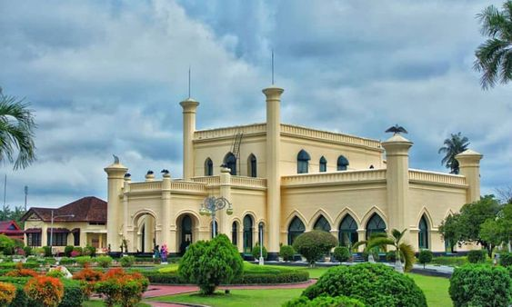
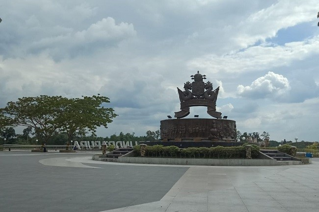
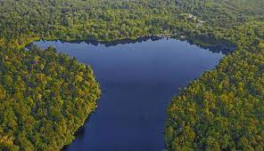
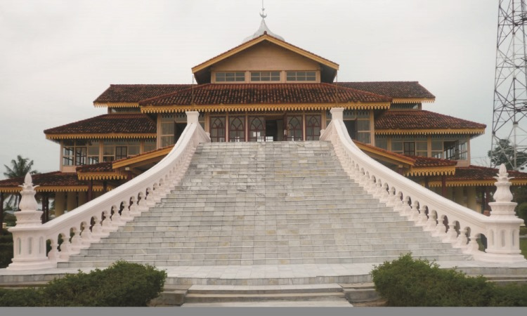

1. Istana Siak

Istana Siak Sri indrapura adalah kediaman resmi Sultan Siak yang memiliki luas 32.000 meter. Istana ini sudah ada sejak tahun 1.723. Bentuk bangunan istana yang terdiri dari 2 lantai ini memiliki arsitektur bercorak Melayu, Arab, dan Eropa.
Pada lantai bawah Anda dapat menemukan 6 ruangan yang difungsikan sebagai ruang tunggu tamu, ruang tamu kehormatan, ruang tamu laki-laki, ruang tamu perempuan, ruang siding kerajaan yang juga difungsikan sebagai ruang pesta.
Sementara untuk lantai atas terdiri atas 9 ruangan yang berfungsi sebagai tempat istirahat Sultan serta para tamu istana.
Di bagian halaman istana, Anda dapat menemukan 8 meriam yang tersebar di berbagai sisi halaman istana. Apabila Anda pergi ke bagian kiri belakang istana, Anda akan menemukan bangunan kecil yang dulunya digunakan sebagai penjara sementara. Selain itu, Anda juga dapat melihat sebuah koleksi peninggalan kerajaan berupa perahu kuno bernama “Kapal Kato“ yang dulunya digunakan Sultan untuk mengunjungi daerah-daerah kekuasaannya.
2. Taman Tengku Mahratu

Taman yang berdiri di kawasan tepian sungai siak atau tepatnya di jalan SUltan Ismail, tak jauh dari Istana Siak yang ramai dikunjungi wisatawan dan masyarakat setempat.
Taman yang berukuran lebih kurang 30 x 5 meter ini mempunyai air terjun menari yang mengikuti irama lagu zapin maupun mozart yang diputar. Terlihat tata cahayanya sempurna dan sangat indah, terlebih lagi pada malam hari.
Pengunjung juga dimanjakan dengan berbagai objek wisata sejarah di sekitar taman Tengku Mahratu ini. Tak hanya itu, para pengunjung juga dimanjakan dengan beberapa tempat peristirahatan seperti kursi taman yang disediakan di bawah pepohonan hijau untuk bersantai dan melepas lelah.
Sedangkan bagi orang tua yang membawa anaknya juga bisa menikmati berbagai permainan seperti Mobil-mobilan, Sepeda motor mini, Becak mini, dan Dunia balon , dsb.Taman Tengku Mahratu, nama ini didedikasikan kepada permaisuri kedua Sultan Syarif Hasyim Beliau ini telah berjasa mendirikan Istana Limas yakni Asrama putri bagi anak yatim piatu untuk bersekolah di Latifah School, sebagai guru yang mengajar tata cara memasak, pelayan istana kerajaan , serta beliau juga mendirikan sekolah Madrasyahtul Nisa' dan Taman Kanak-kanak.
Taman ini terbentang 1.872 M,2 lokasinya sangat mudah dikunjungi yakni disekitar wisata Masjid Syahabuddin, Makam Sultan Syarif Kasim II di kota Siak. Penataan taman ini menambah keindahan suasana di Istana.
3. Danau Zamrud

Bentangan alam indah nan molek itu bernama Taman Nasional Danau Zamrud. Goretan indah sang pencipta tersebut memiliki luas 31.484 hektare. Lokasinya tersembunyi, pedalaman Sungai Apit Kabupaten Siak, Riau. Sekilas memandang, air danau ini berwarna kehitaman yang elegan, persis permata Zamrud. Danau Zamrud melalui jalur anak-anak sungai. Perahu bermesin atau biasa disebut pompong memecah hening aliran anak sungai yang mengalir harmoni menyatu ke dalam danau. Pompong adalah satu-satunya alat transportasi yang bisa digunakan untuk melihat keindahan danau Zamrud yang ditetapkan sebagai kawasan taman nasional itu. Selain akses sungai, untuk menuju Danau juga bisa melewati jalan perusahaan minyak, BOB PT BSP-Pertamina Hulu di Kampung Dayun, Kecamatan Dayun. Namun, jika telah sampai tetap harus menggunakan pompong untuk mengelilingi danau yang masih perawan tersebut.
4. Balai Kerapatan Tinggi

Gedung ini sebenarnya hanyalah sebuah gedung administrasi milik pemerintah setempat. Namun desain dan arsiteknya sangat indah dan memesona. Terdapat anak tangga yang tinggi hingga menuju lantai dua namun berasal dari samping gedung. Jika melihat pemandangan luar gedung dari arah ini tentu akan sangat indah dan memukau. Bangunan kubah yang ada di tengah gedung bagian atas juga menyerupai masjid. Tidak heran jika banyak juga yang mengira gedung ini sebuah masjid sehingga datang dan istirahat sejenak untuk ibadah.